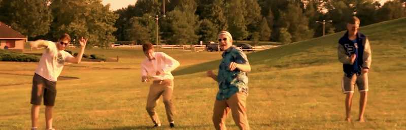
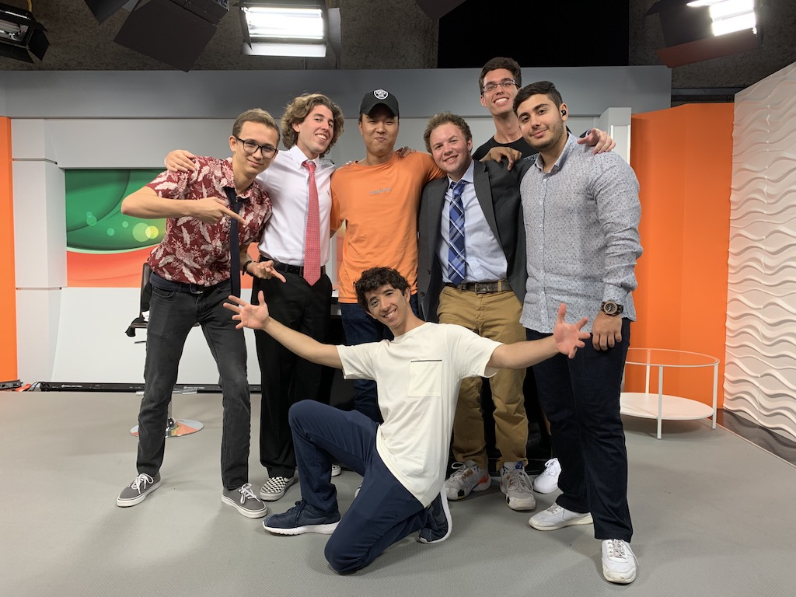

Benjamin Sasportas- An Actor
Major Acting Credits
Chip Tripped
In Chip Tripped, I starred as Chippy Matthews, an internet vlogger who becames a global meme after falling while vlogging. This was some of my first work acting for film, rather than theater, and after watching the finished project, it taught me a lot about how best to play to the camera and adjust my acting techniques for film.
Rewrites

In Rewrites, I starred as Brad Russell, a screenwriter who was just written the worst movie of all time. This was my first starring role in a feature length film. It taught me a lot about how to be a lead actor in a feature. When filming a feature, rather than a short, the filming days are long and the filming schedule can last for months. The lead actor has to bring the same energy to set every single day and is reponsible for setting an example for the rest of the cast. Acting in Rewrites allowed me to learn this first hand.
Matchmaker in College
